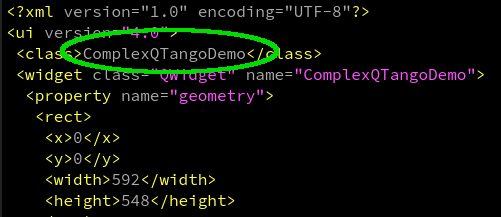

In this tutorial we will learn how to port a QTango application to cumbia. Additionally, frequently asked questions page illustrates some more porting examples.
Demo code used in the examples in this page
A couple of QTango applications are shipped within the qumbia-apps/qumbiaprojectwizard utility source code:
- qumbia-apps/qumbiaprojectwizard/demos/qtango_porting/simple_qtango_danfisik9100
- qumbia-apps/qumbiaprojectwizard/demos/qtango_porting/complex_qtango_demo
They cannot be build without the QTango library but they are full working projects. The code can be used to test qumbiaprojectwizard and to try to port the applications following this tutorial. You may want to read the README files under the directories listed above.
1. Simple QTango applications with QTango base classes
How to tell whether a QTango project is or not a simple application that can be easily ported?
A simple QTango application
- typically consists of a few source files: a main.cpp, a widget.cpp, a widget.h and a ui file edited with the Qt designer
- if more source files make up the project, they only contain the QTango base classes listed below or do not contain QTango code at all
- is made up of QTango base classes only, like TLabel, TPushButton, TPlotLightMarker, TCircularGauge, TLineEdit, TApplyNumeric, TReaderWriter, TDoubleSpinBox, TSpinBox, TApplication, TCheckBox, TSimpleLabel and does not employ custom QTango classes, i.e. objects derived from QTangoComProxyReader, QTangoComProxyWriter, QTangoWidgetCommon
- does not use classes such as TVariant, DeviceThread, DeviceThreadFactory, TAction, PropertyReader, EUniqueApplication, EApplicationButton, SpectrumWriter, ReadersGroup TDbBrowser, TWidgetGroup, TUniqueApplication, ...
- has a *.pro* file starting with a line that looks like include(/usr/local/qtango/include/qtango6/qtango.pri)
To do the following exercise you can refer to the demo code in
- qumbia-apps/qumbiaprojectwizard/demos/qtango_porting/simple_qtango_danfisik9100

An application with such prerequisites can be ported with the help of the qumbiaprojectwizard utility by selecting Import and then Import a simple QTango project, as shown in the picture above.
Please note that qumbiaprojectwizard does its best but it is likely you must fix several issues in order to correctly complete the porting process.
After clicking the Import a simple QTango project, you will be prompted to select a Qt *.pro* file with a valid qtango application. Select the /path/to/your/cumbia/sources/qumbia-apps/qumbiaprojectwizard/demos/qtango_porting/simple_qtango_danfisik9100/danfisik9100.pro file in the dialog box. Once a qtango project file is selected, qumbiaprojectwizard fills in the form with the *project name, author, author email, file and class names according to what has been detected in the project.

Once a project has been correctly detected, you can try to convert it clicking on the Convert... button at the bottom of the utility. If everything is likely to be ok, you should only find green or yellow lines in the list view describing the process. Pay attention to this information and read it carefully before double checking the Output directory for the converted project and clicking on the Convert button on the bottom left. If the chosen output directory is the same as the qtango application, a backup of the old project is done by qumbiaprojectwizard. By default, unless you explicitly select the same directory as the qtango application, a to_cumbia folder is created and there the converted files are put.

We recommend not generating the output files in the same directory as the QTango original project unless you are sure that the porting can be successfully accomplished. Once the Convert button is pressed on the dialog box shown in the picture above, the files are written in the desired output directory. Check the converted project, fix the remaining issues and compile your new cumbia application!
When the above dialog window is closed, qtcreator and qt designer can be automatically launched in the output directory if the corresponding checkboxes in the main qumbiaprojectwizard window are checked.

Important note
Always remember that:
- automatic porting only works when the QTango project is very simple
- automatic porting usually helps a lot migrating a project to cumbia, even when dealing with complex projects
As a consequence:
- several times you will have to fix the remaining issues manually
2. Complex QTango application with application specific QTango classes
A complex QTango application normally
- defines and uses new classes that are specific to that application, readers deriving from QTangoComProxyReader or writers deriving from QTangoComProxyWriter.
- is made up of more than three cpp or header files
- needs to access QTango low level objects, such as TVariant, TAction, QTangoCommunicationHandle and the aforementioned QTangoComProxyReader/QTangoComProxyWriter
- uses objects that do not have a counterpart in cumbia: EUniqueApplication, SpectrumWriter, ReadersGroup, TWidgetGroup, TUniqueApplication, PropertyReader
Complex QTango projects need to follow the generic porting instructions below. They are valid for simple projects as well.
*qumbiaprojectwizard* for complex QTango applications.
The qumbiaprojectwizard utility can be used to help the porting process. It can convert the main.cpp, the mainwidget definition (*.h*) and implementation (*.cpp*), the *.pro* file and the ui xml file generated with the Qt designer. It can also try to perform simple conversion in all the remaining cpp and header files in the project folder.
Open the utility, click on Import a simple QTango project and select the ComplexQTangoDemo.pro file under the demos/qtango_porting/complex_qtango_demo/ directory:
/path/to/your/cumbia/sources/qumbia-apps/qumbiaprojectwizard/demos/qtango_porting/complex_qtango_demo/ComplexQTangoDemo.pro

Let's look at the ComplexQTangoDemo.pro FORMS section:
As you see, there's more than one ui file. qumbiaprojectwizard is able to determine the UI form class name only if
- there is one *.ui file in the project
- there are several *.ui files, but the first "class" child of the ui element (that is, the object name of the top level widget) has the same name as the main application widget name
In this example, the second condition is satisfied, as shown below.
| main.cpp file | ui file in Qt designer | ui file (xml insight) |
|---|---|---|

| 
|

|
Thanks to this condition, qumbiaprojectwizard correctly detects the UI form class name. Now click the Convert button.
The ComplexQTangoDemo panel includes a custom reader (TDialRead) that is a QTangoComProxyReader and a custom writer (TDialWrite) that is a QTangoComProxyWriter. Other two objects are one custom reader and one custom writer, but they use QTWatcher and QTWriter to communicate with tango.
A dialog box asks to choose between
- QuTrendPlot and
- QuSpectrumPlot
when migrating from QTango TPlotLightMarker. QTango TPlotLightMarker adapts to display either scalars or spectrum values. cumbia graphs are specialised to display either one or the other data format and one must be chosen. Select QuTrendPlot in the box and click on Choose, since the attribute displayed by the plot in the complex_qtango_demo application is a scalar double.
The conversion process shows some error messages in red:

The contents described in the red items cannot be ported automatically. The issues must be solved by the programmer later on. Nonetheless, as you can see, much work has been done automatically. Carefully read all the messages in the list before proceeding to the actual migration, then generate the converted code. Select an output directory through the Change button and the file input dialog that follows. We choose to generate the code under:
/path/to/your/cumbia/sources/qumbia-apps/qumbiaprojectwizard/demos/qtango_porting/complex_qtango_demo/to_cumbia
Enable the OK, try your best... box and click on Convert. If the Launch applications after files are created check boxes are enabled, the qt creator and qt designer applications should be launched in the output directory. We will use these tools to correct the remaining errors and port the custom reader from QTango to cumbia.
Run cuuimake on the partially ported project
Momentarily open a terminal, go into the partially converted project folder and run cuuimake:

If you execute make on the command line, you will get a lot of complaints from the compiler.

The main issues concern custom classes inheriting from QTangoComProxyReader and QTangoComProxyWriter. They cannot be ported by qumbiaprojectwizard. Please follow the generic porting instructions that follow.
Porting a QTango application to cumbia. Generic instructions.
Let's analyze again the complex_qtango_demo project in this section. If you have partially ported this demo application using qumbiaprojectwizard and following the instructions above, you should now be stuck in the compilation errors shown in the picture above. In this case, the following files should have been correctly migrated:
- ComplexQTangoDemo.pro
- src/ComplexQTangoDemo.cpp
- src/ComplexQTangoDemo.h
- src/demodialog.cpp
- src/demodialog.h
while the files:
- src/tdialread.h
- src/tdialread.cpp
- src/tdialwrite.h
- src/tdialwrite.cpp
must be corrected manually.
In this case, you can skip to the migrating QTangoComProxyReader derived objects
The Qt project file
Every QTango project is built using Qt qmake. Let's start analyzing the ComplexQTangoDemo .pro file
Every QTango project has a project file resembling this:
More complex projects can contain several directives in the *.pro* file (such as QT, CONFIG, LIBS, INCLUDES, RESOURCES) but, as far as QTango is concerned, only the first line is relevant:
When migrating to cumbia, this line must be replaced by
in the hypothesis where cumbia libs are installed under /usr/local (includes in /usr/local/include/...).
The main.cpp file in a QTango project used to register with the window manager:
if this feature is still desired, you must add
and
to the project *.pro* file, so that -lX11 is used by the linker and the Qt file
included by main.cpp is found.
Please note that registration with the window manager should not be necessary. Execution of unique applications and raising/hiding the application windows is managed by the cumbia dbus plugin.
Since the ported project's ui file will be processed by the cuuimake utility that is run before make, we must add the ui folder to the project INCLUDEPATH, because cuuimake generates the ui_*.h file under the ui subfolder. Additionally, since ui_*.h files generated under the ui dir can include headers placed under the src project folder, we must add src to the INCLUDEPATH as well:
The cuuimake utility runs uic on the project .ui files. This means that qmake must not run uic when compiling a cumbia project. That's because cumbia cuuimake creates the ui_*.h files so that the cumbia-qtcontrols class constructors are expanded to match the expected parameters.
You may want to read the Understanding the cumbia-qtcontrols widgets constructors, sources and targets documentation and the Using cuuimake manual for further details.
This is all you need to port a qtango *.pro* file to cumbia.
The .pro project file: summary
Putting this altogether, the relevant changes to the project file are as follows:
The main.cpp file
QTango specific include files must be removed:
and cumbia includes must be added:
These includes reveal the name of the objects that are used in the main.cpp lines. Let's get into more detail.
- TApplication becomes QuApplication (#include <quapplication.h>)
- EPalette is not used anymore
- TUtil was a QTango class and all its references must be removed
- to correctly accomplish object destruction when the application terminates, the main widget (if there's one) must be allocated in the heap and some cumbia specific objects must be deleted after QApplication::exec is over
- CumbiaTango is usually instantiated in the main.cpp and a pointer to it is passed to the main widget
- when QApplication::exec returns, the main widget and the CumbiaTango instances are deleted
With these considerations, the modified main.cpp looks like this:
That's all for the main.cpp file. The qumbiaprojectwizard is designed to do these steps automatically.
The mainwidget.h header file
The QTango header file defining the main widget of the examined application looks like this:
Since cumbia-qtcontrols objects are parametrized with an instance of Cumbia and a reader or writer factory (or both if the same object is designed both to read and write), pointers or references to these objects must be passed to the main widget constructor so that children can be properly parametrized.
Start adding the needed include files. The top of the header file now looks like this:
The class constructor is expanded to accept a pointer to CumbiaTango:
In a cumbia app, the class attribute storing the main widget form ("ui") must be a pointer. In this example, it was already a pointer:
Finally, a bunch of new class attributes must be defined (private):
The mainwidget.h header file: summary
The cumbia version of the simple QTango main widget header file looks like this at last:
The mainwidget.cpp: the implementation of the main application widget
See how the main widget class constructor implementation used to look like in QTango:
and do examine how things must be modified in order to write a cumbia compliant main widget class constructor.
In this example we include the logging facility. In cumbia it is registered through a service provider (there are no singleton classes in cumbia).
The main widget constructor implementation does the following:
- assigns the pointer to the CumbiaTango allocated in the main.cpp to the cu_t class attribute
- sets up the logging facility
- instantiates the Ui form and calls setupUI with the additional parameters that the form will forward to the cumbia-qtcontrols objects constructors
- instantiates the CuContextActionBridge to give cumbia-qtcontrols children the capability to provide a right click contextual menu
The following code shows the modified main widget constructor in the ComplexQTangoDemo.cpp file. The necessary include files are also listed.
Please note that the ui_ComplexQTangoDemo.h file, expanded by cuuimake, resides under the ui subfolder of the project.
Remember that the line
must be at the end of the method. In this way, all the cumbia-qtcontrols widgets instantiated above it can offer a contextual menu. See the CuContextActionBridge documentation for further details.
The line
takes into account the expanded setupUi method that now accepts additional arguments to appropriately instantiate its cumbia-qtcontrols children.
The m_setup private method attaches the QTWatcher and QTWriter to the corresponding widgets and sets the source and target of the custom QTangoComProxyReader and QTangoComProxyWriter widgets. The code can be directly inspected from the ComplexQTangoDemo.cpp file and the contents of the method body are correctly migrated by qumbiaprojectwizard.
Note
The qumbiaprojectwizard "*Import from QTango*" function should help expanding the main widget definition and class constructor as described in the example above. qumbiaprojectwizard can help if the project is made up of numerous header and source files if they either employ QTango base classes or do not contain QTango specific code.
Building the ported project
The project can be now built:
or
Migrate QTangoComProxyReader derived objects
A more complex QTango application may define and use custom QTango reader classes. For example tree view, tree widget or progress bar are used to read values. Components not included in the QTango library can become readers in two ways:
- inherit from QTangoComProxyReader and implement
- use QTWatcher attached to the display component.
In the second case, QuWatcher can be used. Its interface is equivalent to QTWatcher's. In most cases, it is possible to migrate from the latter to the former by means of the qumbiaprojectwizard utility.
Inheritance from QTangoComProxyReader, implies the following observations. The discussion continues related to
*/path/to/cumbia-libs/qumbia-apps/qumbiaprojectwizard/demos/qtango_porting/complex_qtango_demo*
The QTango class definition is this:
Inheritance from QTangoComProxyReader and QTangoWidgetCommon must be removed. The corresponding include files must be removed too. QTangoComProxyReader was an abstract class, QTangoWidgetCommon a concrete base class. In cumbia multiple inheritance involves interfaces only.
Remove this:
Remove other qtango include directives as well, such as TVariant, view_trend.h, ...
To start porting the custom class to cumbia, rewrite the class definition as follows and add the needed include files:
The CuDataListener interface defines a callback to receive data from the underlying engine. The method
must be implemented.
The CuContextI interface defines one pure virtual method that must be implemented:
The Context is a class that holds link statistics, creates and destroys readers and writers.
If you write the project with qtcreator, right click on the class name and choose Refactor -> Insert Virtual Function of Base Classes
Remove the refresh and autoConfigure methods belonging to qtango:
The class constructors must be expanded to include additional parameters (see Understanding the cumbia-qtcontrols widgets constructors, sources and targets documentation).
Normally, in a generic cumbia-qtcontrols widget two constructor versions are provided, but if you are writing an application that is specific to an engine (e.g. either Tango or Epics), then only one constructor version is enough. In the following code, you can also see the declaration of the methods implementing the aforementioned interfaces. The source and setSource methods, that came for free in the QTango reader from the QTangoComProxyReader, must be explicitly declared and implemented in TDialRead. This is necessary due to the more free nature of a cumbia widget, decoupled from any specific control system engine:
Let's now turn to the tdialread.cpp file and deal with the implementation.
Start removing the refresh and autoConfigure methods. The old qtango style constructor must be removed as well, and the following code will be the starting point for the reader implementation:
To create, connect and destroy the reader we exploit the Context class. We need a reference to it throughout the whole object's lifetime. Add a context class attribute in the header file:
and instantiate it in the constructor. Return the pointer to it from the getContext function:
TDialRead::TDialRead(QWidget *w, Cumbia *cumbia, const CuControlsReaderFactoryI &r_fac) : QDial(w) { context = new CuContext(cumbia, r_fac);
}
CuContext *TDialRead::getContext() const { return context; }
Rember to add
before the constructor implementation in the cpp file.
The purpose of the qtango TDialRead::autoConfigure method was to get the attribute configuration properties from the Tango database and use them to set the minimum and maximum on the dial. Let's do the same now in the cumbia onUpdate callback. After checking if no errors occurred, test whether the data that's just arrived is a configuration type data. Formerly, qtango used to pass configuration data through a specific slot with a TangoConfigurationParameters argument. Now, configuration and actual read data are delivered through the same onUpdate callback. To distinguish data containing database properties from data obtained from the device, we test the value stored in the type key within data. If it is equal to the string property, then configuration data has been delivered this time:
| cumbia code | qtango code |
|---|---|
void TDialRead::onUpdate(const CuData &data){
bool read_ok = !data["err"].toBool();
if(read_ok) {
if(data["type"].toString() == "property") {
// configure!
double m, M;
if(data["min"].to<double>(m) && data["max"].to<double>(M)) {
setMinimum(m);
setMaximum(M);
}
if(data["description"].toString()
}
else {
int v;
data["value"].to<int>(v);
setValue(v);
}
}
setToolTip(QString::fromStdString(data["msg"].toString()));
setEnabled(read_ok);
| void TDialRead::autoConfigure(const TangoConfigurationParameters *cp)
{
if(cp->minIsSet())
setMinimum(cp->minValue());
if(cp->maxIsSet())
setMaximum(cp->maxValue());
QString desc;
if(cp->descriptionIsSet())
desc = cp->description() + " ";
if(cp->displayUnitIsSet())
desc += "[" + cp->displayUnit() + "]";
emit description(desc);
if(cp->currentValue().canConvertToInt())
setValue(cp->currentValue().toInt());
}
|
Otherwise, if no property value is associated to the type key, we extract the read value into an integer and set it on the dial.
See the CuVariant class documentation for more conversion options.
The code above shows the new cumbia code (left) that does the same task as the qtango code on the right. In qtango new read data was delivered through the refresh slot:
The two source and setSource implementations still have to be discussed. The first method returns a string with the name of the source of the reader (i.e. a Tango attribute or command). We use CuControlsReader from the Context to obtain the necessary information. Add the required cucontrolsreader_abs.h include file:
To set (or change) a source, we rely on the CuContext again to obtain an engine independent CuControlsReaderA pointer to an abstract reader. Don't forget to call setSource on that object later:
Optional: provide a context menu to widgets
QTango widgets extending QTangoWidgetCommon get some features for free; mostly, a context menu with some options. To benefit from a context menu in cumbia, you have to
- add an implementation of
- declare a signal like this:
Within contextMenuEvent, place this code (tdialread.cpp):
In order to update the statistics exported through the specific context menu option, you finally have to add another section within the TDialRead::onUpdate method:
This last (optional) step completes the migration of a custom qtango object to cumbia. The same can be done equivalently for writers.
Migrate QTangoComProxyWriter derived objects
Inspect the code within tdialwrite.h under
*/path/to/cumbia-libs/qumbia-apps/qumbiaprojectwizard/demos/qtango_porting/complex_qtango_demo/src*
TDialWrite is a writer deriving from QTangoComProxyWriter and QTangoWidgetCommon, in analogy with the reader already described.
we can spot the equivalent autoConfigure slot and an additional slot that is used to write when the dial is rotated.
First of all, remove the qtango specific includes and change the constructor exactly the same way as we did for the reader. Remove also the autoConfigure slot, which is not necessary. As done before, make sure the necessary cumbia includes are placed at the beginning of the header file. The description signal and the write methods can be reused:
cumbia's TDialWrite will derive from the very same two interfaces as TDialRead.
- CuDataListener enables to get configuration parameters from the Tango database and to receive the outcomes of a write operation
- CuContextI interface forces to define a getContext method that makes the object apt to provide a CuContext through which to export statistics
In analogy with the reader's case, we use the CuContext as a proxy object to connect to the control system and set the target. Declare a CuContext private attribute in the TDialWrite class definition. Inheriting from the two interfaces CuDataListener and CuContextI forces to implement the two methods onUpdate and getContext:
In complete analogy with the reader, we need a target and setTarget method for the writer. The equivalent methods were named setTargets and targets in QTango. QTango targets allowed multiple targets on a single object. In cumbia this is not possible. In QTango, the get and set targets methods were given for free from the QTangoComProxyWriter parent class. We need to declare them amongst the other class methods in the cumbia version:
The writer cpp implementation
Remove the QTango constructor and the autoConfigure method on the cpp implementation. Then empty the body of the write method. Let the getContext method simply return the pointer to the CuContext that will be used by this object. Replace the old constructor with the new cumbia TDialWrite constructor
The constructor will instantiate the context and connect the valueChanged signal of the QDial to the write slot, so that each time the dial is rotated, a write is performed:
The following code snippet shows the implementation of the write function. This is invoked every time the dial is rotated. This could be optimized performing the write operation only when the rotation finishes, but this is not the priority now. First of all notice that if setTarget hasn't been called, there is no CuControlsWriterA available yet (see the target and setTarget functions). That's why it is important to watch out for a null CuControlsWriterA pointer. If it's not null, set the args and call execute on it. The integer value passed to write is wrapped up into a CuVariant.
The onUpdate method can be used to configure the dial with lower and upper bounds, just as we did in the reader. It's a good idea to check that the Tango attribute is writable, disable the widget if it's not, and to initialize the value of the writer with the Tango set point value, which is associated to the w_value key. If the attribute description and display unit are available, use them (emit the description signal):
Finally, write the implementation of target and setTarget in the cpp file:
It's now time to try to build the complex project. Open a terminal into the
*/path/to/cumbia-libs/qumbia-apps/qumbiaprojectwizard/demos/qtango_porting/complex_qtango_demo/src*
directory and execute
The picture below shows the output of the cuuimake utility. It detected two custom classes that are cumbia objects:
- TDialRead
- TDialWrite
Definitions are automatically added by cuuimake so that expansion takes place for both classes just as if they were part of the cumbia-qtcontrols library.

Final steps of the complex project porting recipe
The complex project under examination is made up of two ui files and two classes that respectively use the forms defined in the ui files:

There we can find
- The main widget class defined in ComplexQTangoDemo.h and ComplexQTangoDemo.cpp. Form described in ComplexQTangoDemo.ui
- A dialog window class defined in demodialog.h and demodialog.cpp. Form described in demodialog.ui
The qumbiaprojectwizard is targeted to porting a simple project with a main widget class with one ui form. The utility reads the main.cpp, finds the candidate main widget class name and scans the other source files in order to find its definition. For this reason, ComplexQTangoDemo.h, ComplexQTangoDemo.cpp and ComplexQTangoDemo.ui can be ported automatically also in this complex example.
On the other hand *demodialog.h*, demodialog.cpp and demodialog.ui need further attention. Actually, demodialog.ui is processed and the QTango classes have been replaced by their cumbia counterparts. When cuuimake processes demodialog.ui, finds cumbia classes within the ui_demodialog.h file generated by uic, the Qt ui compiler. They are expanded. For example, if you open ui_demodialog.ui you will find lines like this:
This means that QuTrendPlot has been correctly instantiated with the additional cumbia parameters. The void setupUi method definition has been also expanded by cuuimake:
Port demodialog.h header file
As previously mentioned, demodialog.h has not been processed by qumbiaprojectwizard, because it is not the main widget class of a simple project.
You have to do this manually, and it is very simple indeed. It's enough to make it look exactly like ComplexQTangoDemo.h! (include files and additional private class members)
Open ComplexQTangoDemo.h and copy the two sections delimited by
to the demodialog.h, exactly in the same position as they are in ComplexQTangoDemo.h. Then expand the constructor definition adding the CumbiaTango parameter. The modified version will look like this:
Please note that the declaration:
already implies the instantiation of Ui::DemoDialog in the heap, which is required in cumbia.
The mofified code adds the necessary cumbia specific class attributes and the needed include files.
Port demodialog.cpp cpp file
As explained before, the setupUi method has been expanded by cuuimake in ui_demodialog.h like this:
What you have to do is open the demodialog.cpp, change the constructor from
to
as defined in the demodialog.h.
Then, copy the CumbiaTango pointer into the cu_t class attribute and complete the paramters to setupUi so that they match the ones defined in ui_demodialog.h.
From:
to:
Optional code can be copied from the ComplexQTangoDemo constructor in ComplexQTangoDemo.cpp if you want to add the logging facility and allow the cumbia widgets to provide a context menu.
Since the DemoDialog constructor accepts now two parameters (not only the parent QWidget as before), we must locate where in the project the DemoDialog is instantiated. We can easily spot that this occurs in the ComplexQTangoDemo.cpp file:
The new code will be:
where cu_t is a pointer to CumbiaTango, passed from the main.cpp into the main widget class constructor.
Congratulations! If you carefully followed these instructions and thoroughly understood all the steps, the project should now build successfully and work!